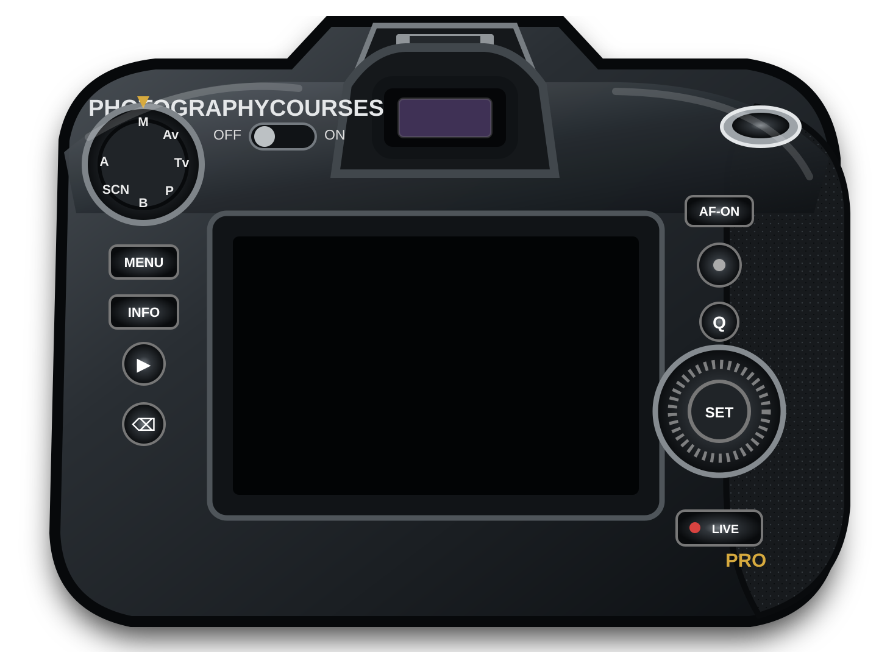

PHOTOGRAPHYCOURSES.COM
PRO CAMERA · SPRINT 1 · MILESTONE 2
Artwork integration

PHOTOGRAPHYCOURSES
PRO CAMERA OS
M
AF-S
999
No photographs captured yet
Click the camera controls. Hold
Shift
while clicking a dial to rotate backwards.